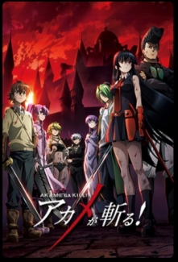
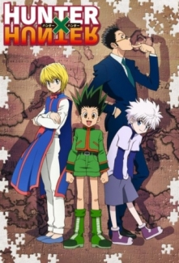
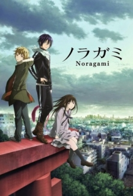

Fullmetal Alchemist

“İnsan bir şeyleri feda etmeden hiçbir şey elde edemez, Bir şeyi elde etmek istiyorsan ona eş değerde bir şey sunmalısın, Bu simyanın eşdeğer değiş-tokuş prensibidir.” Elric kardeşler Edward ve Alphonse ölen annelerini diriltmek için simyaya başvururlar. Ama insan ruhu ile değiş-tokuş yapılacak eş değerde bir şey bulunmamaktadır. Deney sırasında büyük kardeş Edward bacağını, küçük kardeş Alphonse ise bedenini kaybeder. Edward elindeki son çareyi kullanıp Al’ın ruhunu bir zırha bağlamayı başarır ama bu esnada da kolunu kaybeder. İki kardeş annelerini diriltmenin imkansız olduğu büyük kayıplardan sonra anlar. Automail sayesinde mekanik uzuvlarına kavuşan Ed, kardeşine olanların kendi suçu olduğuna inanır. Al'ın bedenini geri almak ve simyayı daha da iyi öğrenmek için Elric kardeşler evlerini yakıp bir yolcuğa çıkarlar.
Akame ga Kill!
Tatsumi, kırsal kesimde yaşayan genç ve güçlü bir savaşçıdır. O ve 2 arkadaşı fakir köyleri için para kazanma hayali ile imparatorluk başkentine doğru yola çıkarlar. Ancak, büyük umutlarla geldikleri başkent, hiç de düşündükleri gibi çıkmayacaktır. Başkentin acımasızlığı ile yüzleştikten sonra hiç de düşündüğü bir yer olmadığını anlayan Tatsumi'nin yolu, bir olay sırasında Akame ve Night Raid adlı suikast örgütü ile kesişir. Bu bozulmuş topluluk karşısındaki devrimcilerin suikast kolu olan Night Raid'e katılma kararı alan Tatsumi, artık Night Raid'in yanında başkente karşı savaşacaktır. Night Raid, görevini kötüye kullanan, halka zorbalık yapan insanlara suikast düzenlemeye devam ederken, tüm bu her şeyin başında olan başbakan Night Raid'e karşı en iyi askerlerinden oluşan bir grup kurar: Jeagers (Avcılar). Night Raid ile Jaegars'ın kapışması hiç de kolay olmayacaktı
Hunter x Hunter
Gon Freecss, avcı (Hunter) olmak isteyen küçük bir çocuktur. Babası da avcı olmak için ailesini terk etmiş ve efsanevi bir avcı olmuştur. Gon da hem babası için bu kadar önemli olan avcılığı tanımak hem de dünyanın en iyi avcısı olmak istemektedir. Gon 12 yaşına geldiğinde annesi istememesine rağmen avcılık sınavına girmek için evinden ayrılır. Bu sınavı geçmek için hem en zor koşulların üstesinden gelerek hayatta kalmak, hem de bu arada kendisi gibi avcı olmak isteyenlere karşı kendini korumak zorundadır. Not: 1999 yılı yapımı Hunter x Hunter serisinin yeniden yapımıdır.
Nanatsu no Taizai

Bazılarının hala canlı olduklarını iddia etmelerine rağmen Yedi Ölümcül Günah, İngiltere Krallığı'nı devirme komploları kurup, Kutsal Şövalyeler tarafından köklerinin kazındığı söylenen bir grup şeytani şövalyelerdir. 10 yıl sonra da Kutsal Şövalyeler hükümete darbe düzenlemiş, krala suikast yapmış ve krallığın yeni zalim hükümdarları olmuşlardır. Kralın tek kızı olan Elizabeth de Yedi Ölümcül Günah'ı bulup krallığı geri almak için onlardan yardım temin etmek amacıyla bir yolculuğa çıkmıştır.
Dr. Stone

Kaçınılmaz bir günde, tüm insanlık kör edici bir ışık parlamasıyla donakalmıştı. Birkaç bin yıl sonra, Liseli Taiju uyanır ve kendini heykellerin dünyasında kaybolmuş şekilde bulur. Ama, yanlız değildir! Onun Bilime aşık arkadaşı Senku kalkmış ve bir kaç aydır çalışıyordu ve bilimin gücüyle medeniyeti yeniden inşa etmek için aklında bir fikri vardı.
Noragami
Bu diyar ve diğer diyar arasındaki sınırda 8 milyon tanrı, tanrılara hizmet eden ölü ruh ve yardımcı diğer ruhlar insanların işlerine karışmaktadır. Tatlı bir orta okul öğrencisi olan ''Hiyori Iki'' sınıf arkadaşlarının zorbalıklarına katlanmaktadır ve dinlenme odasına gidip tek başına ağlamaktadır.Tuvaletin duvarına karalanmış olan bir telefon numarası ve '' senin sorunlarını çözeceğim'' şeklinde mesaj görür. Numarayı aradıktan, Karşısına mayo giymiş evsiz kendine tanrı diyen bir çocuk çıkar. Yato isimli bu çocuk, kaba, huysuz, tembel, ve kimsenin isteklerini asla dinlememektedir. Fakat elinde tanrı olabilecek güç vardır ve kimse bunu bilmemektedir..